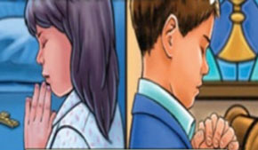
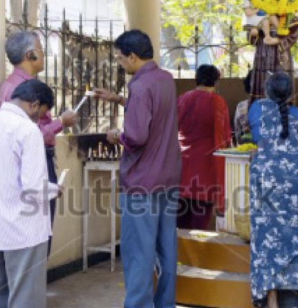
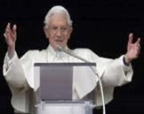
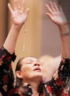

It is often difficult to define something which is familiar. If we were asked to define ‘liturgy’ we may not be able, even though we participate in liturgies on a regular basis. People have differing and sometimes conflicting views on what liturgy is. One of the difficulties in describing liturgy is that, like the Internet itself, liturgy is a living mystery: liturgy is always open to fresh insight and deeper understanding. The liturgy is always more than we can say and eludes precise description. There is, however, much that can be said about it to help us understand.
The liturgy is a continuing celebration of God’s ongoing presence in the world. The Second Vatican Council described the liturgy as ‘source and summit’ of Christian life. It is a pattern of initiative and response: God’s initiative and the Christian person’s response, which underlies all of the Christian life. The pattern of initiative and response is clearly evidenced in liturgy. God’s outreach is expressed in the readings from the Bible and the gift of God comes to the community through the sacraments. People respond to both reading and sacrament.
Liturgy has several defining characteristics:
Liturgy is the public and official worship of the church; it is not just the Mass and the sacraments, but includes all the Liturgy of the Hours, rituals which are part of RCIA and Christian funerals, as well as rituals for the consecration of members of religious orders, and formal blessings.
Liturgy is the action of the church offering worship to God where the baptised faithful are led by Christ.
Liturgy is the action of the church offering worship to God where the baptised faithful are led by Christ.
Liturgical gestures and actions
Liturgies are rituals and therefore they are full of ritual gestures and actions. A gesture is movement of a part of the body, usually the hands or head to express a particular meaning. In prayer settings many gestures are used to assist the believer in praying.
Gestures of the priest
Gestures involve our bodies in prayer. In the Mass a variety of gestures are used by both the priest and the congregation. In a Mass, the gestures of the priest have particular meaning and significance.
Procession
The Mass usually opens and concludes with a procession of the priest, readers and altar servers. The opening procession which moves through the church towards the sanctuary reminds the people gathered that they are part of the priesthood of all believers as baptised people of God. Just prior to the gospel being proclaimed, during the acclamation, the Book of the Gospels is often taken in procession to the lectern or ambo. At the conclusion of Mass, the priest, readers and altar servers process away from the altar, through the congregation as the people sing the final hymn.
Bowing
Bowing is a sign of reverence. The Priest bows before the altar or genuflects before the Tabernacle as a sign of reverence acknowledging the presence of Christ. The priest bows at other times during the Mass: during the Creed when saying the statement “...conceived of the Holy Spirit, born of the Virgin Mary”; and while praying during the Preparation of Gifts.
Step 1: Rite of Acceptance into the order of Catechumens
The Mass usually opens and concludes with a procession of the priest, readers and altar servers. The opening procession which moves through the church towards the sanctuary reminds the people gathered that they are part of the priesthood of all believers as baptised people of God. Just prior to the gospel being proclaimed, during the acclamation, the Book of the Gospels is often taken in procession to the lectern or ambo. At the conclusion of Mass, the priest, readers and altar servers process away from the altar, through the congregation as the people sing the final hymn.
Priest
What is you name?
Canditate
The candidate replies
Priest
What do you ask of God's church?
Canditate
Faith
Task 7.1 | Making a mini-book
It is often difficult to define something which is familiar. If we were asked to define ‘liturgy’ we may not be able, even though we participate in liturgies.

Figure 4.7 During the period of purification and enlightenment, two presentations take place
Access the website and read through the infor mation located there.
Using this information, follow these steps to construct your mini-book:
Plan out what will go on each page (make sure you outline the gestures/actions in the correct order)
For each action you must include a depiction of the gesture
You must also use your note-taking skills to draw out and describe the action using three bullet points.
Here is an example:
Bowing
Plan out what will go on each page (make sure you outline the gestures/actions in the correct order)
For each action you must include a depiction of the gesture
You must also use your note-taking skills to draw out and describe the action using three bullet points.
Source: Keller Institute
Psalm 8
Divine Majesty and Human Dignity
Lord, our Sovereign, how majestics your name in all earth! You have set you glory above the hevans
O Lord, our Sovereign, how majestics your name in all earth! You have set you glory above the hevans
O Lord, our Sovereign, how majestics your name in all earth! You have set you glory above the hevans
The first examples use a break to force a wrap for typesetting. The last example displays content wrapping within the element.
It is often difficult to define something which is familiar. If we were asked to define ‘liturgy’ we may not be able, even though we participate in liturgies on a regular basis. People have differing and sometimes conflicting views on what liturgy is. One of the difficulties in describing liturgy is that, like the church itself, liturgy is a living mystery: liturgy is always open to fresh insight and deeper understanding. The liturgy is always more than we can say and eludes precise description. There is, however, much that can be said about it to help us understand.
Questions on Miracle Worker
Here is an example:
Helen’s behaviour at the dining room table is inappropriate, yet the Captain is angry with Anne.
Do you consider Anne’s behaviour to be appropriate or not? Why?
Why does Anne insist that Helen go to the water pump? What tactics does she use to control Helen?
What insight does Helen gain at the pump and how is this achieved?
Source: Keller Institute

Figure 4.7 During the period of purification and enlightenment, two presentations take place
It is often difficult to define something which is familiar. If we were asked to define ‘liturgy’ we may not be able, even though we participate in liturgies on a regular basis. People have differing and sometimes conflicting views on what liturgy is. One of the difficulties in describing liturgy is that, like the church itself, liturgy is a living mystery: liturgy is always open to fresh insight and deeper understanding. The liturgy is always more than we can say and eludes precise description. There is, however, much that can be said about it to help us understand.
The liturgy is a continuing celebration of God’s ongoing presence in the world. The Second Vatican Council described the liturgy as ‘source and summit’ of Christian life. It is a pattern of initiative and response: God’s initiative and the Christian person’s response, which underlies all of the Christian life. The pattern of initiative and response is clearly evidenced in liturgy. God’s outreach is expressed in the readings from the Bible and the gift of God comes to the community through the sacraments. People respond to both reading and sacrament.
Litany of the Saints
Cantor
Congregation
St Mary Magdalene,
pray for us
St Agatha,
pray for us
St Lucy,
pray for us
St Mary Magdalene,
pray for us
St Agatha,
pray for us
St Lucy,
pray for us
St Mary Magdalene,
pray for us
St Agatha,
pray for us
St Lucy,
pray for us
The Baptism of Jesus: Gospels parallels
Image
Describe gesture
Conveyed by gesture
Possible
13The liturgy is a continuing celebration of God’s ongoing presence in the world. The Second Vatican Council described the liturgy as ‘source and summit’ of Christian life. It is a pattern of initiative and response: God’s initiative and the Christian person’s response, which underlies all of the Christian life.
17It is often difficult to define something which is familiar. If we were asked to define ‘liturgy’ we may not be able, even though we participate in liturgies on a regular basis
28The liturgy is a continuing celebration of God’s ongoing presence in the world. The Second Vatican Council described the liturgy as ‘source and summit’ of Christian life. It is a pattern of initiative and response: God’s initiative and the Christian person’s response, which underlies all of the Christian life. It is often difficult to define something which is familiar. If we were asked to define ‘liturgy’ we may not be able, even though we participate in liturgies on a regular basis
11It is often difficult to define something which is familiar. If we were asked to define ‘liturgy’ we may not be able, even though we participate in liturgies on a regular basis
Activity 7.1 | Liturgical actions
Copy and complete the following table.
Describe the following gestures.
Image
Describe gesture
Possible meaning conveyed by gesture

The Second Vatican Council described
Entry First Line 3

Entry Line 2
Entry Line 3
The Second Vatican Council described
Entry First Line 3
Alternate table style
Image
Describe gesture
Possible meaning conveyed by gesture
The Second Vatican Council described
Entry First Line 3
Entry Line 2
Entry Line 3
The Second Vatican Council described
Entry First Line 3
It is often difficult to define something which is familiar. If we were asked to define ‘liturgy’ we may not be able, even though we participate in liturgies on a regular basis. People have differing and sometimes conflicting views on what liturgy is. One of the difficulties in describing liturgy is that, like the church itself, liturgy is a living mystery: liturgy is always open to fresh insight and deeper understanding. The liturgy is always more than we can say and eludes precise description. There is, however, much that can be said about it to help us understand.
The liturgy is a continuing celebration of God’s ongoing presence in the world. The Second Vatican Council described the liturgy as ‘source and summit’ of Christian life. It is a pattern of initiative and response: God’s initiative and the Christian person’s response, which underlies all of the Christian life. The pattern of initiative and response is clearly evidenced in liturgy. God’s outreach is expressed in the readings from the Bible and the gift of God comes to the community through the sacraments. People respond to both reading and sacrament.
Interactive 7.1
Alternate iframe style
Figure 4.7 During the period of purification and enlightenment, two presentations take place